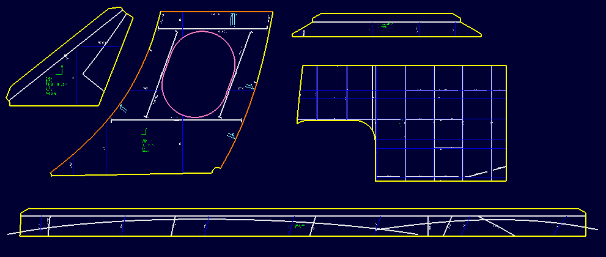

部品図
部品図
部材の部品図(板材、条材の原寸の展開図面)を作成します。部品図はEvo.Shipの図面中に各部材毎の図面シートとして作成されます。
この機能は、部品図を作成するための設定ファイルを使用します。

操作方法
部品図を作成する部材を選択。OKボタンで図面を作成します。
パラメータ
- 出力部材
部品図を作成する部材を指定します。
- 型鋼出力設定
選択部材中の条材について以下の出力方法を指定することができます。
- 貫通する部材をマーク
条材が貫通する板のモールド位置をマークするかどうかを指定します。
- 位置のマーキン線
位置のマーキン線（フレームスペース、ウォーターライン、バトックライン)を部材にどのように描くかを指定することができます。
- なし
位置のマーキン線を描画しません。
- 全て
部材にかかる位置のマーキン線を全て描画します。
- 両端のみ
部材にかかる位置のマーキン線のうち両端にそれぞれ一つのみ（あれば）描画します。
- 一つおき
部材にかかる位置のマーキン線を一つおきに描画します。
- なし
- 伸び尺
部材に伸び尺を与えて部品図を作成します。
- 貫通する部材をマーク
- マーキン線の位置を指定
位置のマーキン線（フレームスペース、ウォーターライン、バトックライン)は設定されているものを使用しますが、位置情報をファイルから読み込むように指定することができます。ファイルのフォーマットは船体情報読込みコマンドと同じ書式を使用します。
- 出力設定ファイルを指定
設定ファイルの一部分を記述したcsvファイル(書式は同様です。)を選択して、設定を一部変更することができます。
- フォント
図面の文字を設定します。